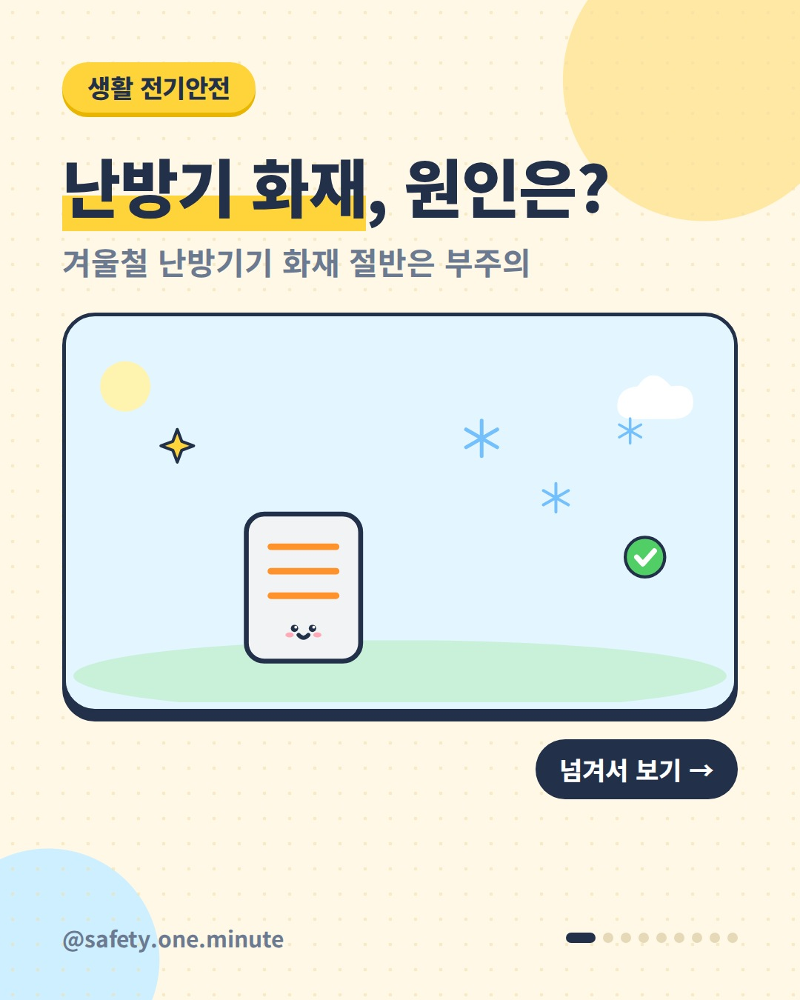
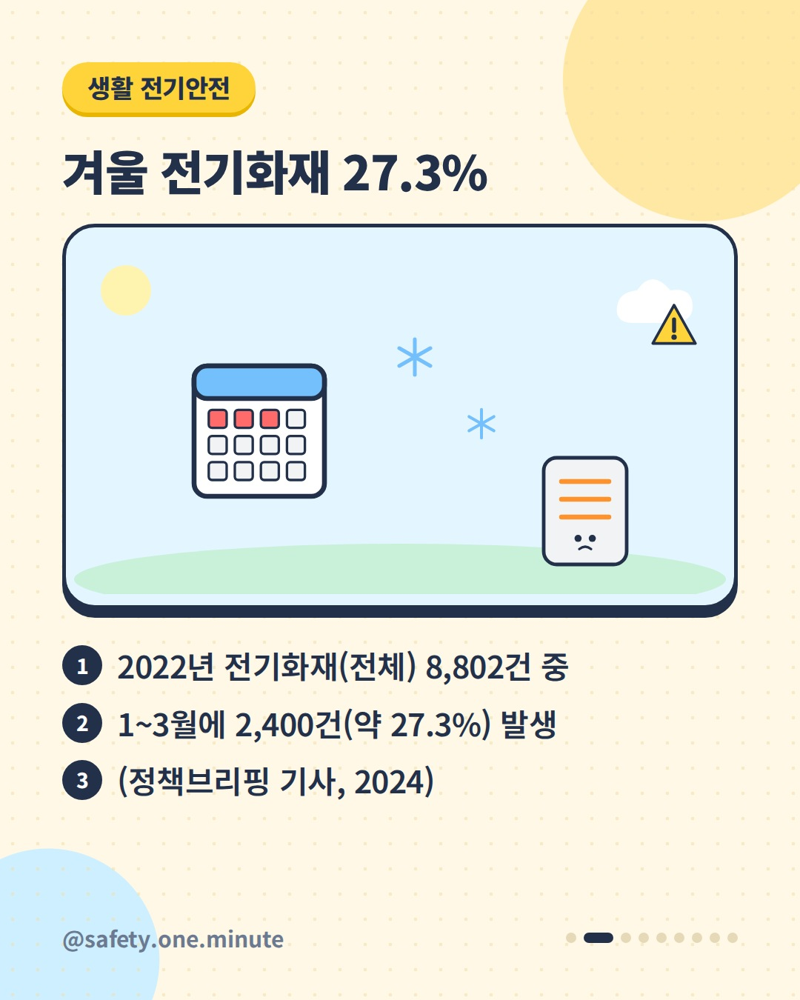
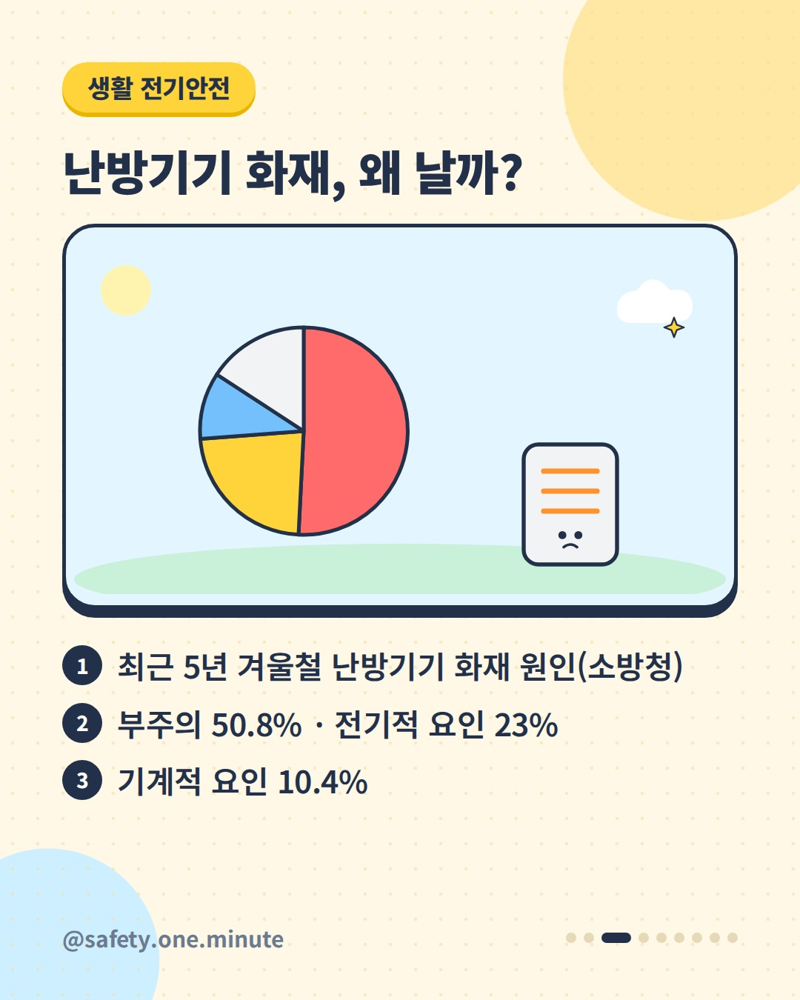
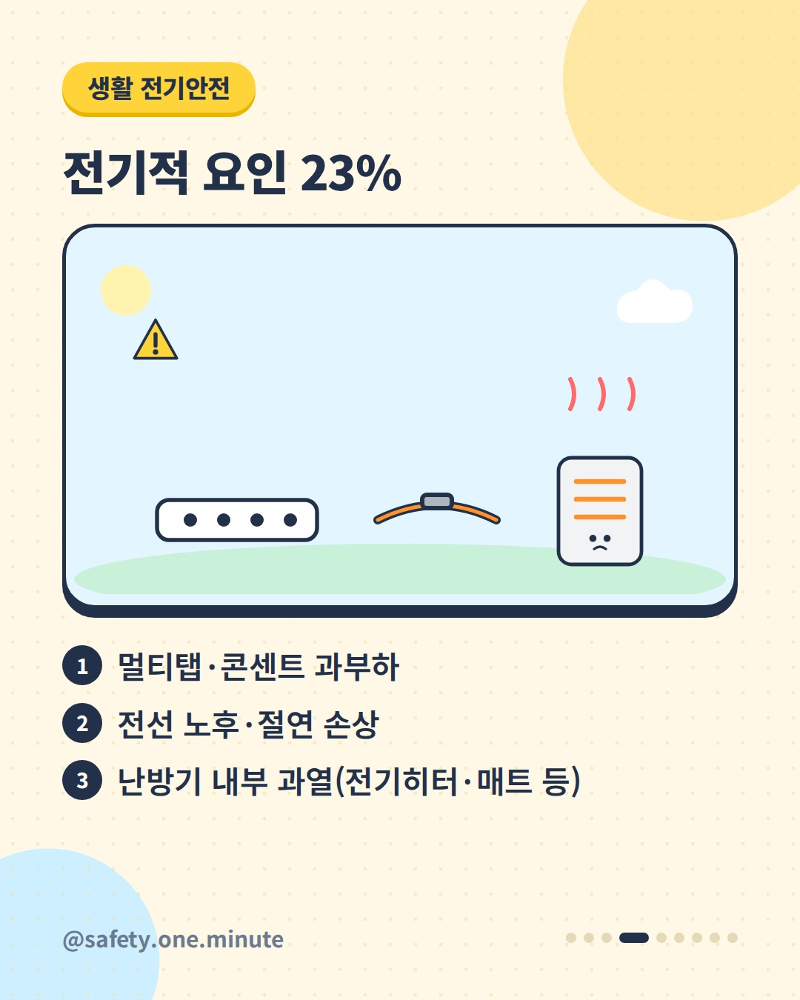
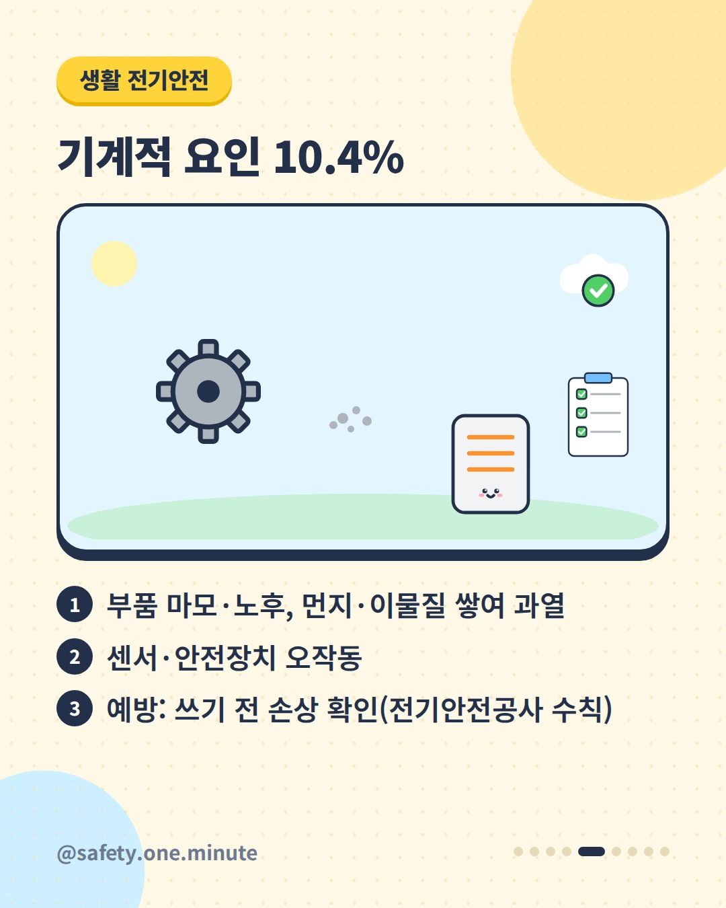
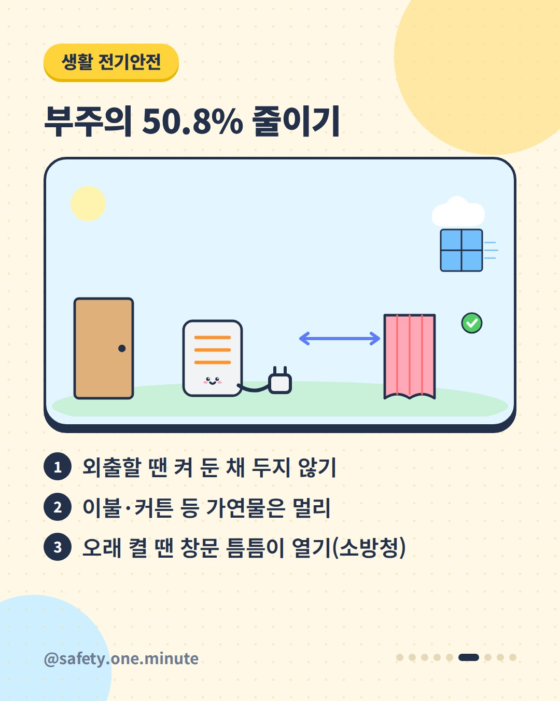
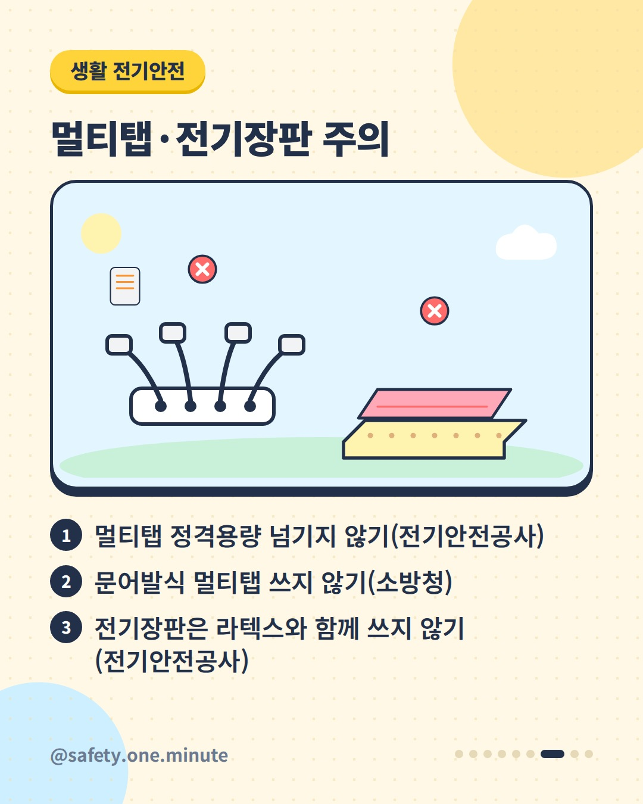
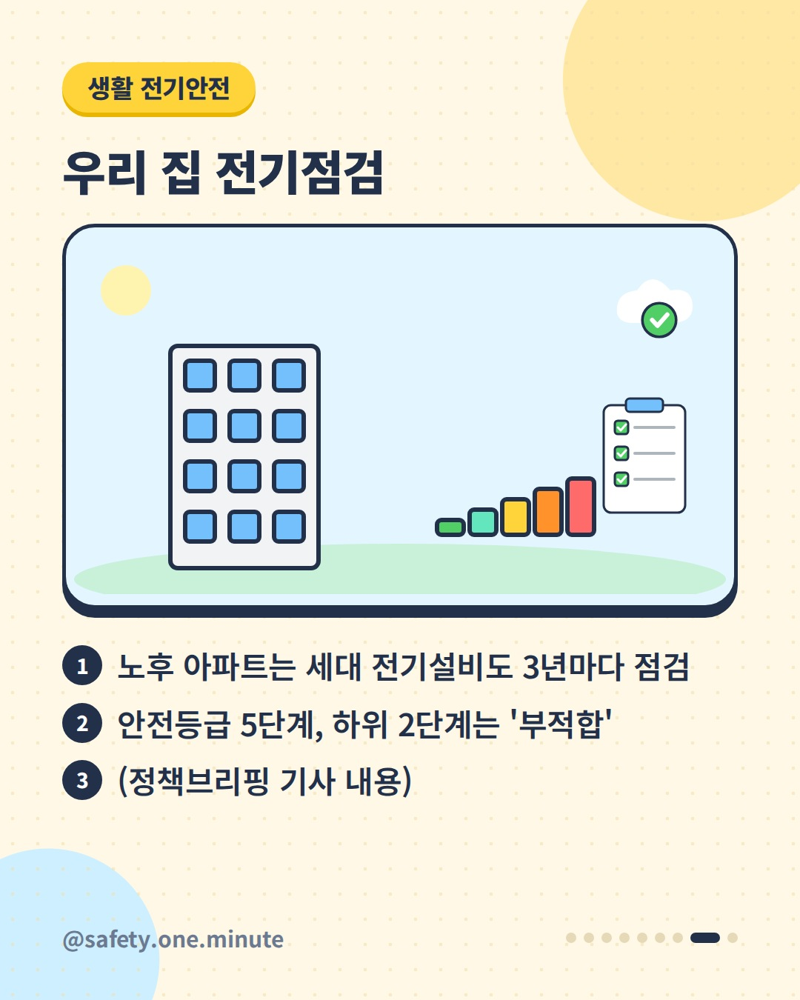
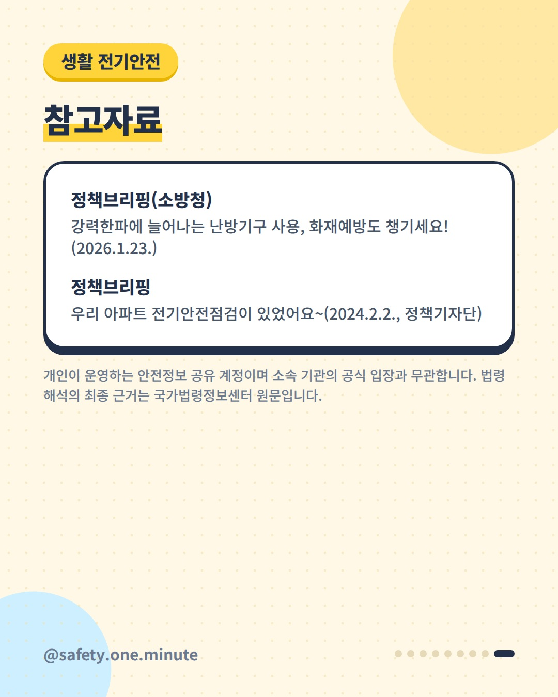

난방기 화재, 원인은? — 9장 (4:5)









캡션
겨울철 난방기기 화재, 원인을 알면 줄일 수 있습니다. 정책브리핑 기사(2024)에 따르면 2022년 전체 전기화재 8,802건 가운데 약 27.3%(2,400건)가 1~3월에 났습니다. 이와 별도로 소방청(2026.1.)은 최근 5년 겨울철 난방기기 화재(전기 외 난방기기 포함) 원인으로 부주의 50.8%, 전기적 요인 23%, 기계적 요인 10.4%를 꼽았습니다. 이렇게 줄일 수 있습니다. 1) 외출할 땐 켜 둔 채 두지 않기, 이불·커튼 등 가연물은 멀리, 오래 켤 땐 창문 틈틈이 열기 2) 멀티탭·콘센트 과부하 주의 — 난방제품은 정격용량을 넘기지 말고 문어발식 사용 금지 3) 쓰기 전 전선·온도조절기·스위치 손상 확인, 이상 있으면 수리·교체(한국전기안전공사 수칙) 4) 전기장판은 라텍스와 함께 쓰지 않기(열이 쌓일 수 있음) 5) 노후 아파트라면 세대별 전기설비 정기점검(3년마다 1회) 안내가 올 수 있으니 받아 보기 출처: - 소방청 – 강력한파 난방기구 화재예방(2026) - 정책브리핑 – 우리 아파트 전기안전점검이 있었어요(정책기자단, 2024) 개인이 운영하는 안전정보 공유 계정이며 소속 기관의 공식 입장과 무관합니다. 법령 해석의 최종 근거는 국가법령정보센터 원문입니다. #겨울철화재 #전기화재 #난방기구 #멀티탭 #전기안전점검 #생활안전